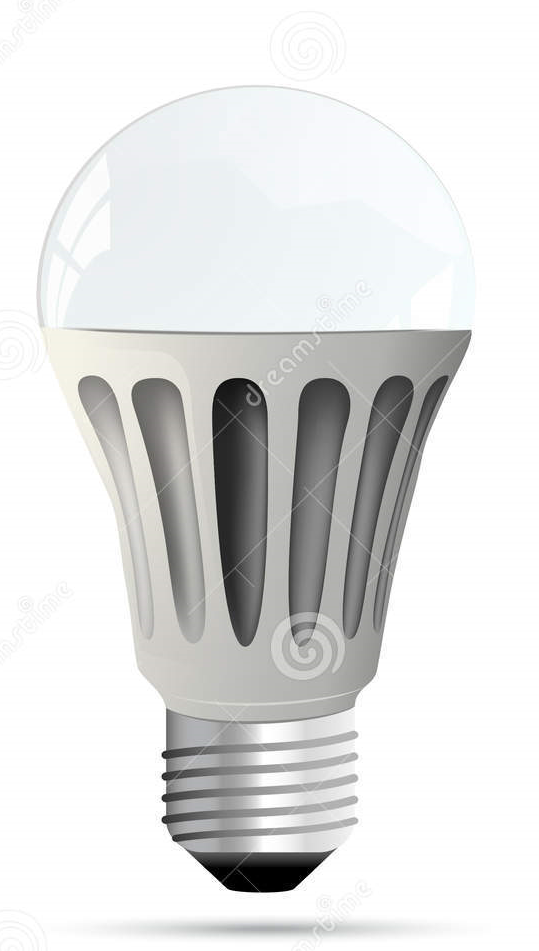

<!--  WAP to turn off and turn on the light use images -->
<!DOCTYPE html>
<html>
	<body>
		<button onclick="document.getElementById('1').src='on.png'">ON</button>
		
		<button onclick="document.getElementById('1').src='off.png'">OFF</button>
	</body>
</html>